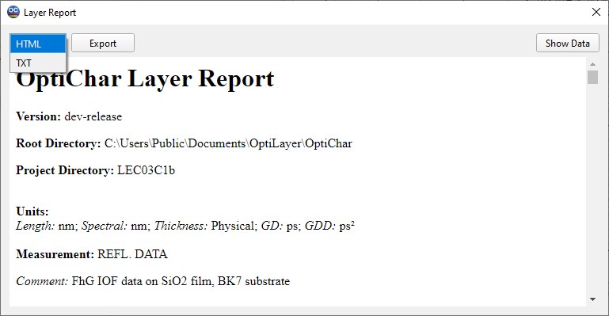

Output Window
Many commands from the Results menu open the Output window. This window displays results in text form. Results can be shown in Hierarchical View, Plain View, or Editable View. Additionally, results can be saved to a file, printed, and directly exported to MS Excel.

Each report in the Output window has its own tab at the bottom of the Output window. Clicking these tabs allows fast switching between different reports.
This combo box allows the user to select a type of report presentation:
Hierarchical View: Hierarchical view type allows expanding and collapsing any report topic. This makes a complicated report more compact and easily readable.
Plain View: Plain view type displays a report as a plain, read-only text. Entire rows are available for selection.
Editable View: Editable view displays text in an editor.
Save As: Allows the user to save the current report to a file. Pressing this button is equivalent to the “Save As…” command of the File menu.
Print: Allows the user to print the current report. Pressing this button is equivalent to the “Print…” command of the File menu.
Export to Excel: Allows the user to export the current report to MS Excel. Pressing this button is equivalent to the “Export to Excel…” command of the File menu.
Collapse All: Collapses all nodes in the hierarchical view type.
Expand All: Expands all nodes in the hierarchical view type.
Block Mode: Affects the type of selection (Editable view only). When this button is pressed, it is possible to select a rectangular area of the Output window. Otherwise, the selection works in a text stream style.
Undo, Cut, Copy, Paste, Delete: Perform the same operations as the corresponding commands of the Edit menu.